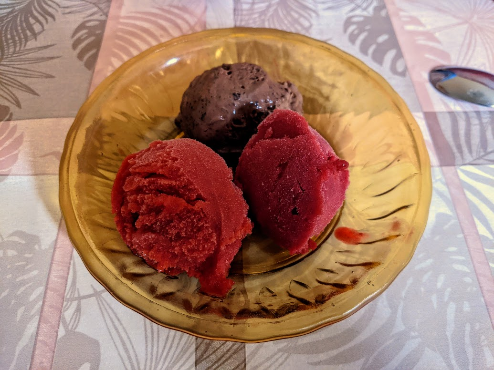

Sorbets

Une boule de sorbet à la fraise, une boule de sorbet à la framboise, et une boule de glace au chocolat indécente.
Hors-série
Faire des sorbets artisanaux au goût fabuleux et à la consistance impeccable, c'est beaucoup plus facile qu'il n'y paraît. Il y a trois étapes :
- Mixer des bons fruits en purée, que l'on passe à la passoire fine.
- Mélanger avec un volume de sucre égal au quart du volume de la purée de fruits.
- Passer à la sorbetière, puis une nuit au congélateur.
Tout est important.
- Les fruits doivent être bons : il n'y a que ça qui donne du goût, donc si on utilise des fruits médiocres, ça ne pardonne pas. Inversement, en partant de fruits fantastiques et mûrs à point, on obtient un sorbet à tomber par terre.
- Mixer les fruits, et passer le tout à la passoire fine, évite de se retrouver avec des pépins ou des bouts de pulpe à la consistance désagréable.
- On doit avoir une quantité de sucre entre 20% et 30% dans le résultat final pour que ça prenne une bonne consistance de crème glacée. Quand on ajoute 20% de sucre au sucre naturel du fruit, ça garantit d'être dans la bonne tranche.
- La sorbetière donne une structure bien crémeuse au sorbet, et une nuit au congélateur solidifie le tout pour obtenir une consistance parfaite, qui reste stable pendant le service et la dégustation.
Le truc à ne pas faire, c'est un sirop de sucre. Ça ne sert à rien, l'eau utilisée dilue le sorbet, et donc on doit utiliser plus de sucre pour compenser. L'utilisation universelle de sirop de sucre dans toutes les recettes trouvables en ligne ou en version papier est une conspiration mondiale. Je ne vois pas d'autre explication.
Niveau goût, c'est souvent une bonne idée d'ajouter le jus d'un demi-citron ou citron vert pour environ un litre de préparation. C'est notamment le cas pour les fruits rouges.